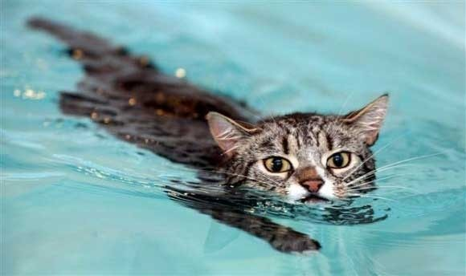

Pisica de casă, pisica domestică sau mâța (Felis catus sau Felis silvestris catus) este un mamifer din ordinul carnivorelor, familia Felidae, subfamilia Felinae. Este alături de oameni de peste 9500 ani și în prezent este cel mai cunoscut animal domestic în toată lumea. Pisica domestică este foarte apropiată de pisica sălbatică europeană (Felis silvestris silvestris), ca și de pisica sălbatică africană (Felis silvestris libyca), împreună formând o specie unică: Felis silvestris.
